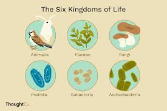
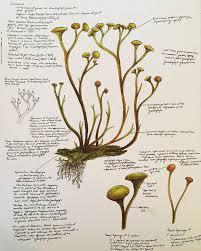
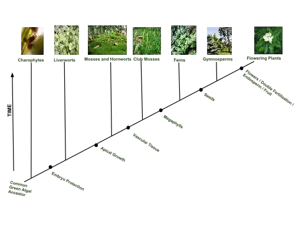
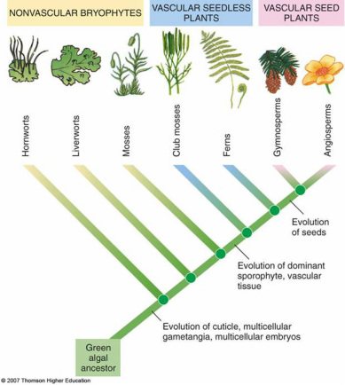
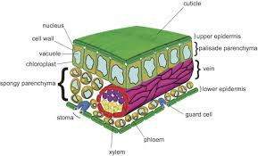
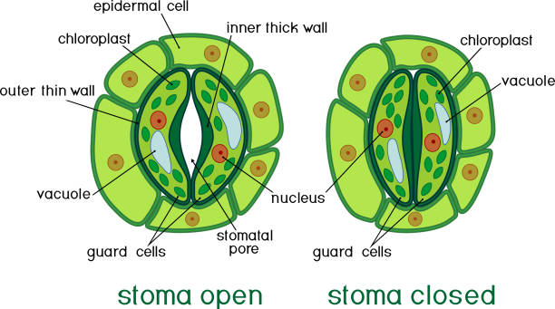
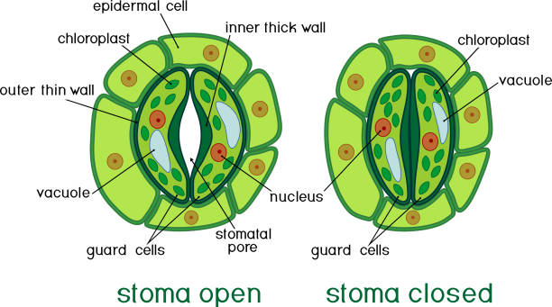
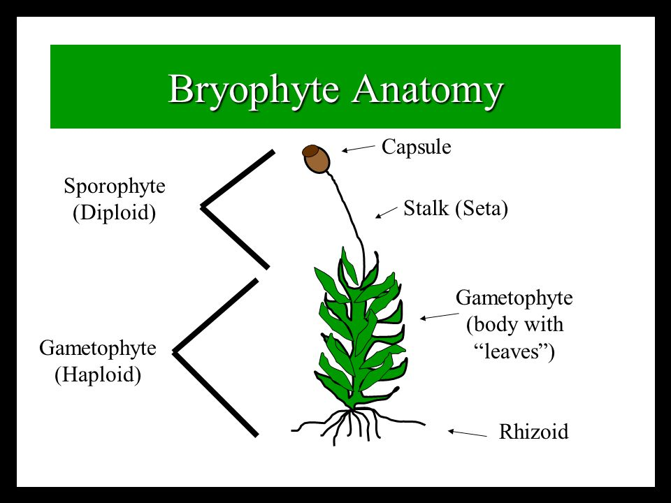
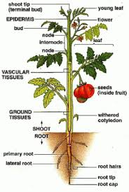
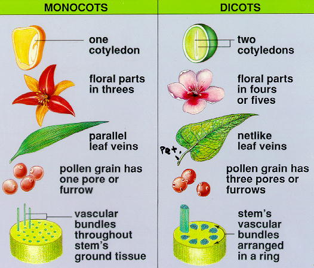

!DOCTYPE html>
Diversity of Plants

Plants evolved from algae
- Algae cannot survive on land (only in moist enviornments)
- Plants had to adapt (evolve) characteristics that would allow them to survive and live on dry land
- Cooksonia is the earliest known land plant (fossil)

- It's non-vascular and similar to day bryophytes
Plants and algae: shared traits
- They both have same photosynthetic pigments (Chlorophyll a&b, carotenes, etc.)
- Both use starch to store photosynthetic products
- Both have cellulose in their walls
- Both have 'alternation of generation'...
- Both form a cell plante during cell division
Kindom Plantae
12-14 phyla, but four primary groupings:


Plants are the base of land ecosystems
- Nearly all organisms on land depend on plants for food.
- Humans depend on plants for food, clothes, medicines, and many other products.
-
Plants have balue when left in nature as well
- preventing runoff and erosion
- Recyclng carbon dioxide from the atmosphere
- Producing oxygen for us to breath
General plant anatomy

Know cuticle, epidermis, mesophyll and stoma
Stoma: opening for gas exchange
 

Bryophyte anatomy
- Rhizoids rather than roots
- Thallus: not differentiated into leaf and stem
- Sporophyte: is composed of diploid cells
- Gametophyte: is composed of haploid cells

Angiosperm anatomy

PLANTAE
- Plants are multicellular autotrophs that use specialized organelles called
chloroplasts to carry out photosynthesis
- Plants can reporduce both sexually and asexualy
Gymnosperm
About
The evolution of seeds congtributed to the sccess of gymnosperms
- Gymnosperms were the first plants to evolve pollen, a microscopic structure that contains sperms cells
- Pollen is dry, powdery, and can be produced in great quantities
- Gymnosperms were the first plants to evolve the seed
- ....
Reproduction in Gymnosperms
- The adult sporophyte produces microspores and megaspores which produce male and female gametrophytes respectively
- Male gametophyte: pollen(contains sperm
Gymnosperm Seeds
- Seed has three parts:
- sporophyte embryo
- stored food
- protective coating
Four groups of Gymnosperms
- CYADS:
- Leaves clumped near top of stem, palm-like appearance
- Diecious (male female)
- Cones are on separate plants
- Insect pollinatied, not wind pollinated
- Sperm are still flagellated and still swim to egg
- GINGOS
-
GNETOPHYTES
- 3 living genera, 750 species
- Gnetum - tropical, trees or vies
- Ephedra - SWUSA, small scale like leaves, ephedrine producing
- Welwitschia - deserts of affrica
- Lack archegonia - angiosperm characteristics
- insect pollinated
-
CONIFERS
- Pines, spruce fir, cedar, hemlock redwood, cypress, larch
- Confiers are mostly monecious (Separate male nd female reproductive organ; one plant) - pllen cones and seed consts
- Leaves are needle like and resistant to water loss because of a thck cuticle and recessed stomata
- Resin to produced to repel insects and fungus
- Tallest living vascular plants - redwoods
- Oldest living tree - bristlecone pine
Angiosperm
Angiospers use wind, water and animals to disseminate their pollen
- Some angiospersm rely on the wind or water for pollination, while others rely on animals to transport their pollen
- Brigh petals, odors, and sugary nectar are used to attract pollinators
- Animal pollination is more targed than wind pollinatoion,but there are some energy cost to production attractive flowers
Angiosperm fruit helps protect and disperse the seeds inside it
- After ferilization, the ovules devolp into seeds and the ovary walll that enclosed them becomes the fruit wall
- A fruit, therefore,is a mature ovary with seeds inside it
- In addition to protecting immature seeds from would-be seed predators, the angiosperm fruit wall is a seed disperal device
Terms
- Monoecious: male and female structures are produced on the same individual
- Stamen: Male structure; it produces pollen, which contains sperm
- Carpel: Female structure; base of carpel
- Monocot: Only have one cotyldon
- Dicot: Have two cotyldeons
- cotyledons: for
Seeds
- Endosperm is stored food tissue - for the ebryo to grow
- The ovule becomes the seed coat
- Ovary becomes the fruit
Monocot vs. Dicot
